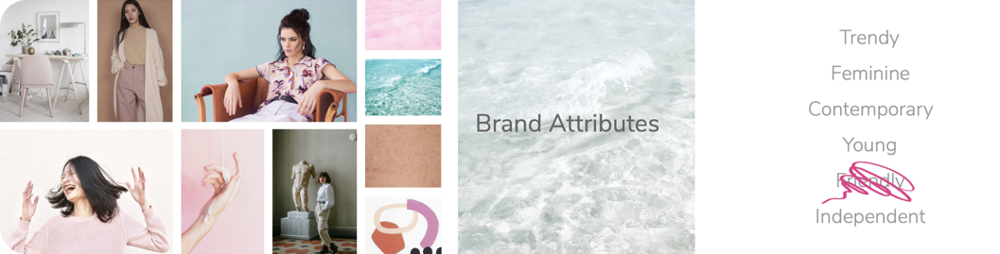

Challenge
This week I was assigned to design a responsive online platform for a magazine, newspaper or blog directed to meet the needs and goals of one of a User Personas. Candice, a trendy marketeers tends to be on top of the latest trends and uses publications as source of inspiration for work from her favorite magazines; Vogue, Cosmopolitan, Ellle.
WHAT'S OUT THERE
In order to design a responsive online platform we needed to do do a benchmark analysis as well as a visual competitive analysis of the current platform that she is currently using. Breaking down by content, tone, fonts, colors, types of images, layout.

Based on out data we used the MOSCOW Method in order to identify what we Must Have, Should Have, Could Have and Wont Have on the online platform. In order to identify Candice core needs we create a user story to really grasp the users main needs.
As a marketer who studies groundbreaking trends, I want to find a website that delivers up to date intel on hot topics within fashion, beauty, and culture so that I can be inspired on my job.
PROTOTYPING WITH DIFFERENT FIDELITY
Once we had our story we created our site map to illustrate the overall concept of what our platform will offer. We created a Moodboard which is an arrangement of images, materials, and pieces of text intended to evoke the type of concept we're trying to focus on. Moodboards really help us visualize the essence of the brand. Brands have personalities which really sets the character and personality of traits.

However, we conducted a Qualitative Desirability Test Results in order to see if our attributes really define our Moodboard. Unfortunately, some where a little off.
- Calming effect with coloring
- The green army lady is way too bold
- There's contrast between pieces
- Friendly is missing because of the no connection with the audience
- Contrast of Natural & Organic
- Water does not fit, you guys should remove it
Based on our results we switched up some of our images and attributes to the following:

Based on my site map we were able to create our Lo-Fi Wireframes. Creating a Usability Test Report Quantitative and Qualitative where we can see how quickly our users can perform the task as well as how many errors do the user make.
We moved forward and created our Mid-Fi Wireframes. Also creating a Usability Test Report Quantitative in order to see if users are still having issues in completing the mission. Based on the data you can see that users misclick rate went from 50% down to 33.3% as well as an average success increased from 66.7% to 100%.
Solution
In order to dive into our Hi-Fi Prototype we needed to design a style tile a design deliverable consisting of fonts, colors and interface elements that communicate the essence of a visual brand for the web. Style tiles establish a direct connection with actual interface elements without defining the layout. We conducted a Qualitative Style Tile and Desirability Test Results in order to know if we're in the right path with our personas needs.

Basing on our style tile in order to move foward we developed a visual design documentation, Atomic Design Inventory. Having our inventory helped us designed quicker our Hi-Fi Prototype.Check out the final prototype below: